Use Case
In real world we have applications which have components spread across different servers/locations which requires coordination and the same has to be managed by the application code and it becomes complicated with time and also difficult to manage.
To make it easy AWS provides AWS StepFunctions to create workflows which can
coordinate application logic across distributed systems as shown below. Here we
have an upstream application invoking a workflow with the order details. The
workflow will perform the below steps
- Update the DynamoDB with the order details
- Check if the order details are proper
- If proper put a message in the OrderFufillment Queue
- Else put a message in the Escalation Queue
The downstream application would read the messages from these Queues and
process the messages further.
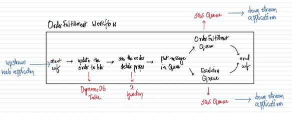
Below is the workflow as depicted by the AWS StepFunctions. The above and below diagram do represent the same workflow with a different way of representation.
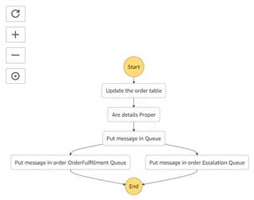
AWS Services: StepFunctions, SQS, DynamoDB and Lambda.
-- Go to the DynamoDB Management Console and click on “Create table”.
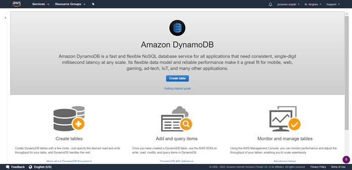
-- Enter the table name as OrderTable and the PartitionKey as OrderId/String. Click on Create. The table would be created in a few minutes with no Items as shown below.

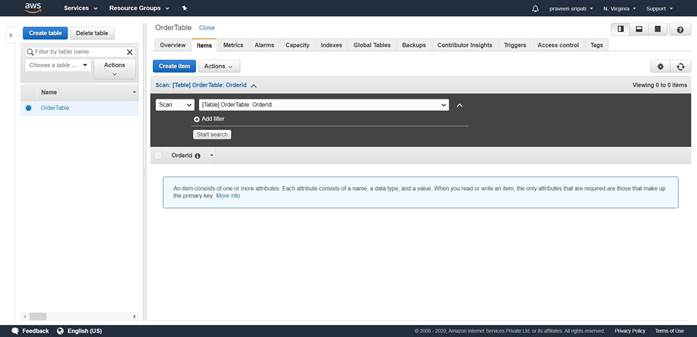
-- Go to the SQS Management Console and click on “Create queue”. Specify the Queue name as OrderFulfillmentQueue and click on “Create Queue”. The default options are good enough.
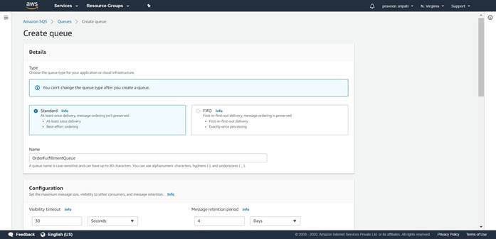
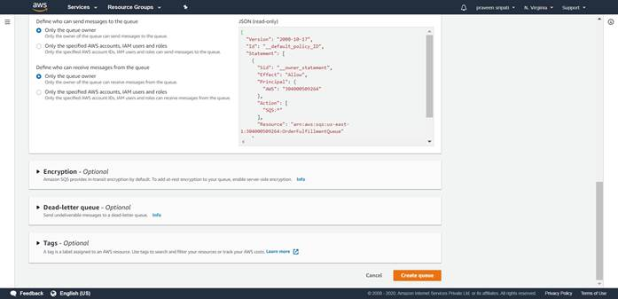
-- The Queue will be created as shown below. Note down the URL for the Queue, the same would be used later.
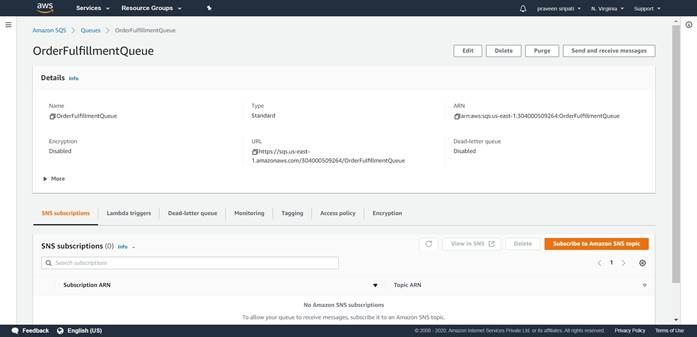
-- Create another Queue EscalationQueue and note down the Queue URL.
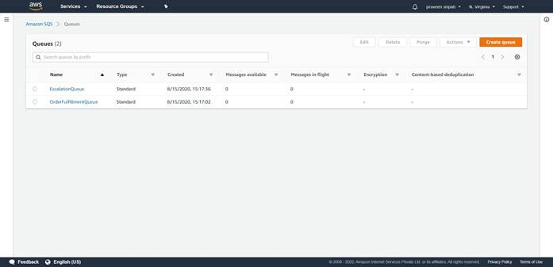
-- Go to the IAM Management Console. Click on the Roles link in the left pane. Click on “Create role”.
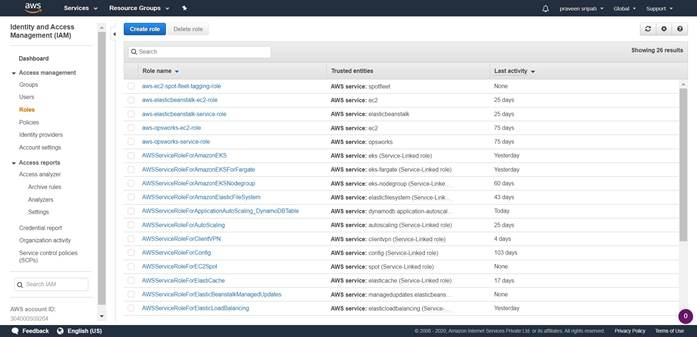
-- Select Lambda as the service which is going to use this IAM Role. Click on
“Next Permissions”.
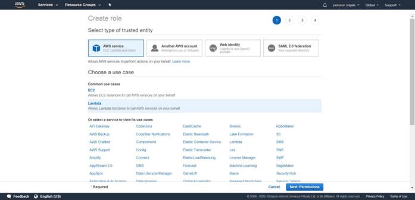
-- Select the AWSLambdaBasicExecutionRole Policy and click on “Next Tags”. Tags are optional, so click on “Create Role” without any changes.
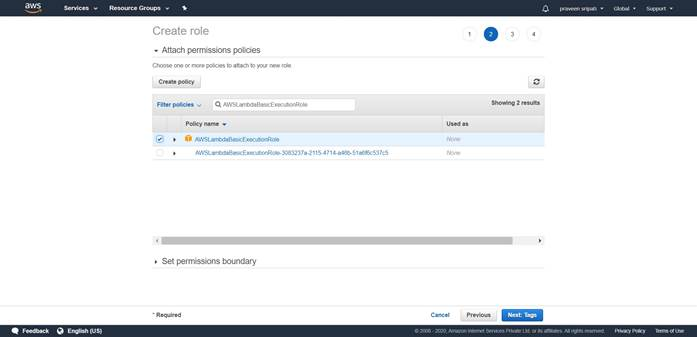
-- Enter the Role name as RoleForLambda and click on “Create role”.
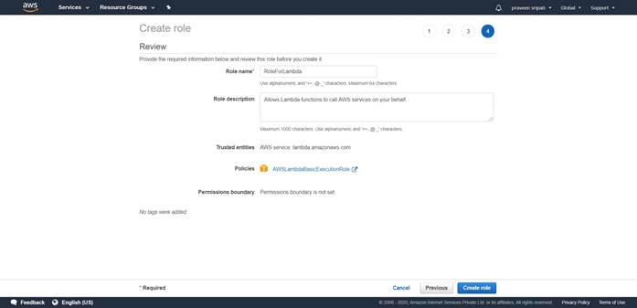
-- The Role would be created as shown below. The same would be attached to the Lambda function later.
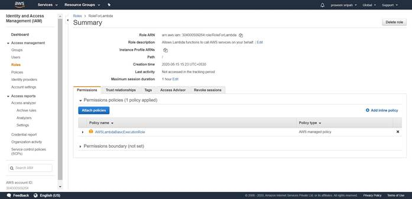
-- Go to the Lambda Management Console and click on “Create function”.
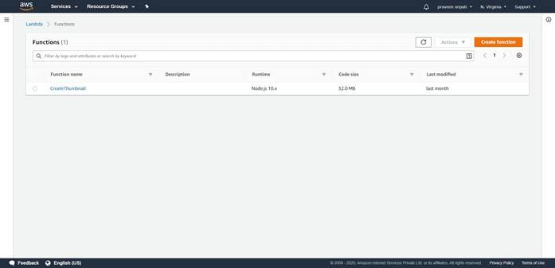
-- Enter the function name as VerifyCCAndPrice, select Python2.7 as the Runtime and expand “Choose an existing role”.
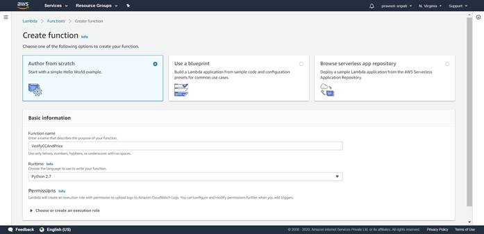
-- Select “Use an existing role” and select the IAM Role created in the previous steps. Click on “Create function”.
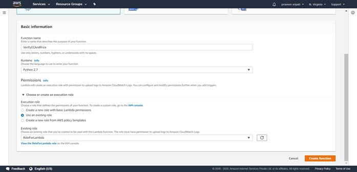
-- Replace the Python code with the below code. The Lambda checks for the validity of the Credit Card and Price and returns the appropriate StatusCode with other details. Click on Save.
def lambda_handler(event, context):
if ( len(event['CC']) == 16 and
int(event['Price']) > 0 ):
StatusCode = 1
else:
StatusCode = 0
return {
'Status' : StatusCode,
'OrderId': event['OrderId'],
'Name': event['Name'],
'ItemName': event['ItemName'],
'Price': event['Price'],
'CC' : event['CC']
}
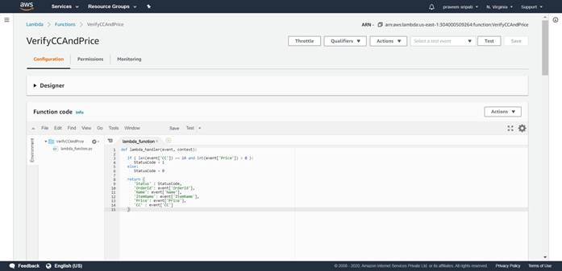
-- Go back to the IAM Management Console and create a Role. Select the Step Functions as the Service which is going to use this Role. Click on Next.
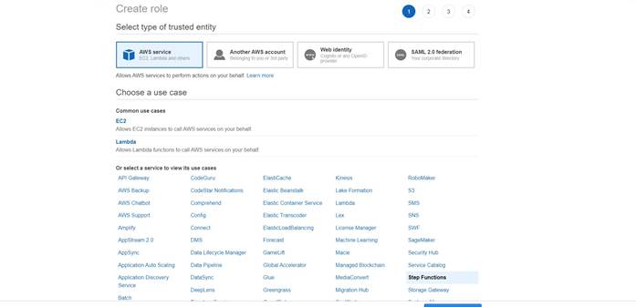
-- Go with the default options and click on Next.
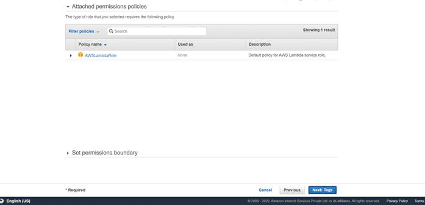
-- Enter the Role name as RoleForOrderFulfillmentStepFunctions” and click on “Create role”.
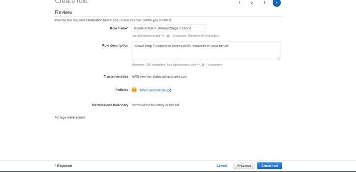
-- The IAM Role would be created as shown below.
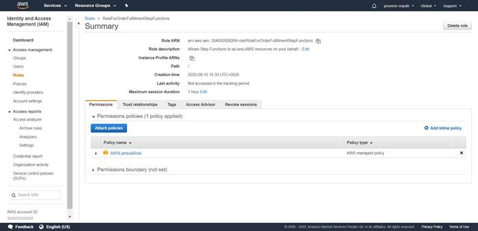
-- Click on “Attach policies” and add the below additional policies to the Role.
- AmazonSQSFullAccess
- AmazonDynamoDBFullAccess
- AmazonLambdaBasicExecutionRole
This IAM Role we would be using the Step Functions later and the IAM Role
should be displayed as shown below.
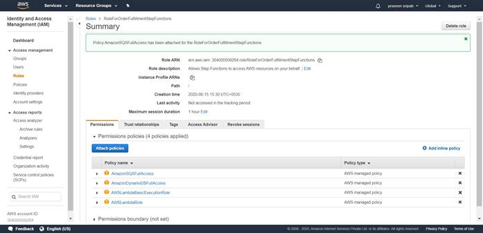
-- Go to the Step Functions Management Console and click on “Burger” on the top left and click on “State machines”.
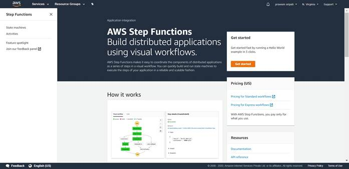
-- Click on “Create state machine”.

-- Go with the default options.
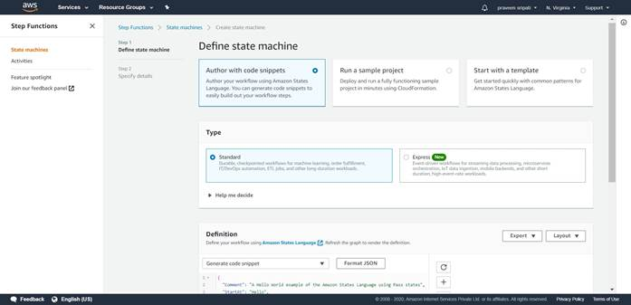
-- Paste the below JSON in the definition. This defines the workflow. Click on
the refresh button and notice the workflow on the right pane getting updated as
shown below. Make sure to replace the Lambda ARN and SQS URL for both the
Queues in the JSON code. Click on Next.
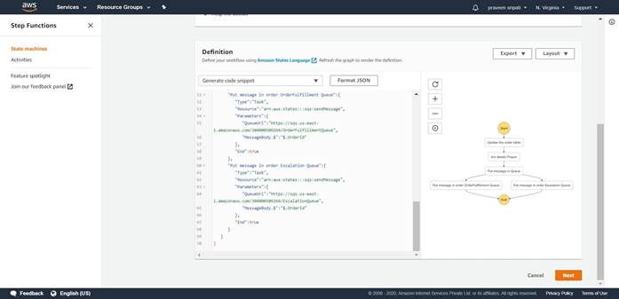
{
"Comment":"A state machine that automates a order
fulfillment.",
"StartAt":"Update the order table",
"States":{
"Update the order table":{
"Type":"Task",
"Resource":"arn:aws:states:::dynamodb:putItem",
"Parameters":{
"TableName":"OrderTable",
"Item":{
"OrderId":{
"S.$":"$.OrderId"
},
"Name":{
"S.$":"$.Name"
},
"ItemName":{
"S.$":"$.ItemName"
},
"Price":{
"S.$":"$.Price"
},
"CC":{
"S.$":"$.CC"
}
}
},
"ResultPath":null,
"Next":"Are details Proper"
},
"Are details Proper":{
"Type":"Task",
"Resource":"arn:aws:lambda:us-east-1:304000509264:function:VerifyCCAndPrice",
"Next":"Put message in Queue"
},
"Put message in Queue":{
"Type":"Choice",
"Choices":[
{
"Variable":"$.Status",
"NumericEquals":1,
"Next":"Put message in order OrderFulfillment
Queue"
},
{
"Variable":"$.Status",
"NumericEquals":0,
"Next":"Put message in order Escalation
Queue"
}
]
},
"Put message in order OrderFulfillment Queue":{
"Type":"Task",
"Resource":"arn:aws:states:::sqs:sendMessage",
"Parameters":{
"QueueUrl":"https://sqs.us-east-1.amazonaws.com/304000509264/OrderFulfillmentQueue",
"MessageBody.$":"$.OrderId"
},
"End":true
},
"Put message in order Escalation Queue":{
"Type":"Task",
"Resource":"arn:aws:states:::sqs:sendMessage",
"Parameters":{
"QueueUrl":"https://sqs.us-east-1.amazonaws.com/304000509264/EscalationQueue",
"MessageBody.$":"$.OrderId"
},
"End":true
}
}
}
-- Specify the state machine name as “OrderFulfillmentStateMachine”. Select the “Choose an existing role” options under permissions and select the Role which has been created for State Functions earlier. This will give the permissions to the state machine to interact with the different AWS Services.
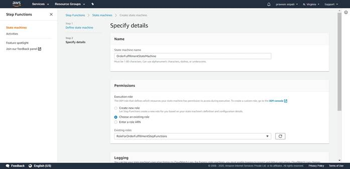
-- Go with the rest of the default options and click on “Create state machine”.
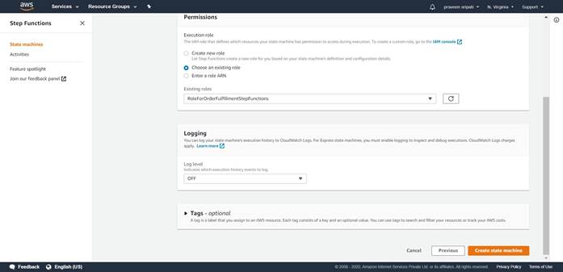
-- The state machine would be created as shown below.
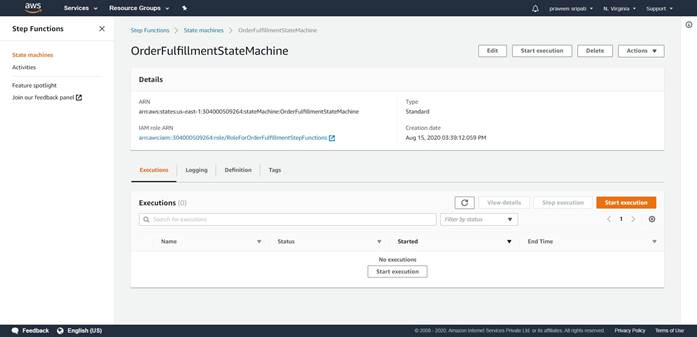
-- The state machine takes JSON as the input. Here are some sample inputs which can be used with the workflow.
1. All the data is valid.
{
"OrderId": "001",
"Name": "Praveen Sripati",
"ItemName": "Lenovo ThinkPad E14",
"Price": "80000",
"CC" : "1234123456785678"
}
2. Invalid Price.
{
"OrderId": "002",
"Name": "Praveen Sripati",
"ItemName": "Lenovo ThinkPad E14",
"Price": "-123",
"CC" : "1234123456785678"
}
3. Invalid CC.
{
"OrderId": "003",
"Name": "Praveen Sripati",
"ItemName": "Lenovo ThinkPad E14",
"Price": "80000",
"CC" : "123412345678"
}
4. Invalid CC and Price.
{
"OrderId": "004",
"Name": "Praveen Sripati",
"ItemName": "Lenovo ThinkPad E14",
"Price": "-123",
"CC" : "123412345678"
}
-- Click on “Start execution” and enter a valid JSON and again click on “Start execution”.
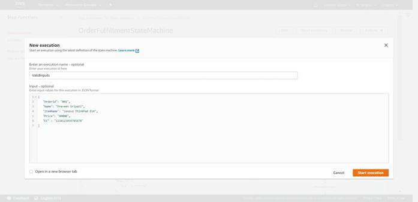
-- The “Execution Status” should be succeed.
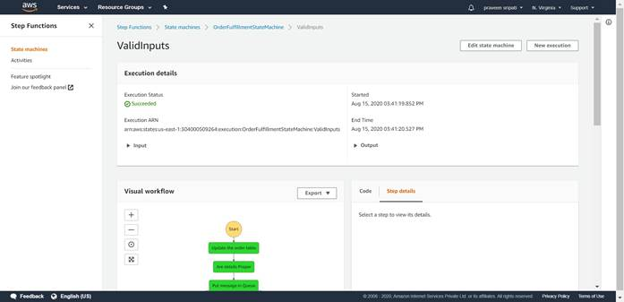
-- And the workflow should be as shown below. Notice the path in the workflow.
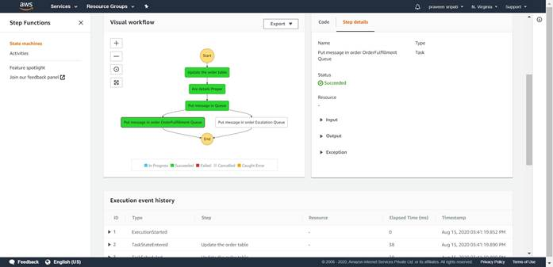
-- Go to the DynamoDB Management Console and an item should be inserted into the table.
-- Go to the SQS Management Console and there should be an item in the OrderFulfillmentQueue for the downstream applications to process it further.
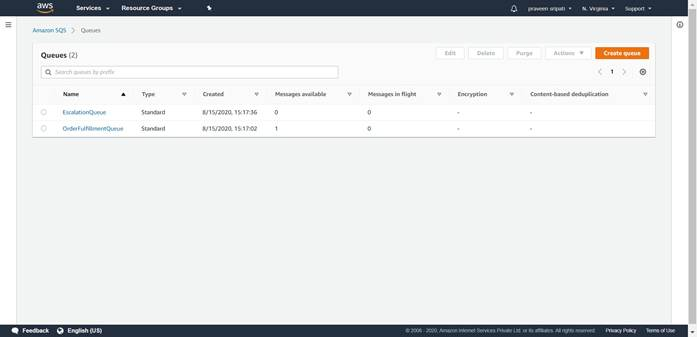
-- This time execute the workflow with an invalid message. In the below screen,
notice that the price is negative.
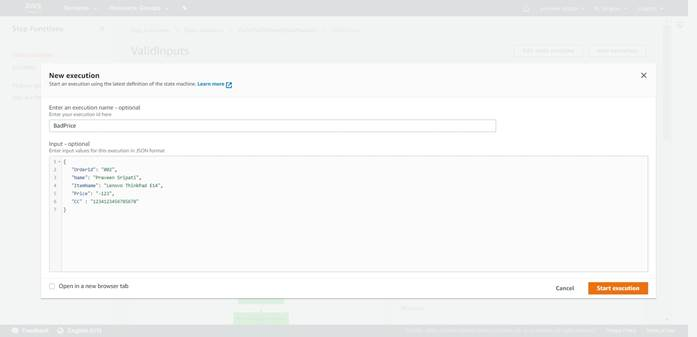
-- The workflow should appear as shown below.
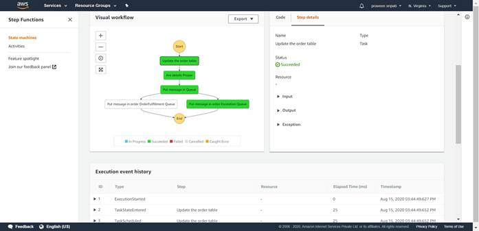
-- An item should be inserted into the DynamoDB table.
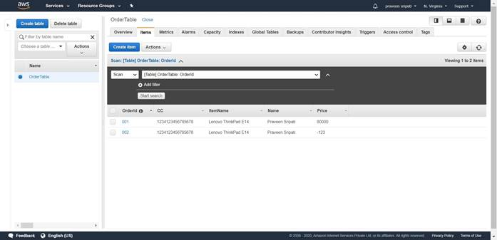
-- A message would be put in the EscalationQueue for the downstream application to be processed further.
-- Go to the CloudWatch Management Console and any error messages from the Lambda execution should appear hear if any.
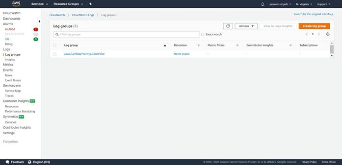